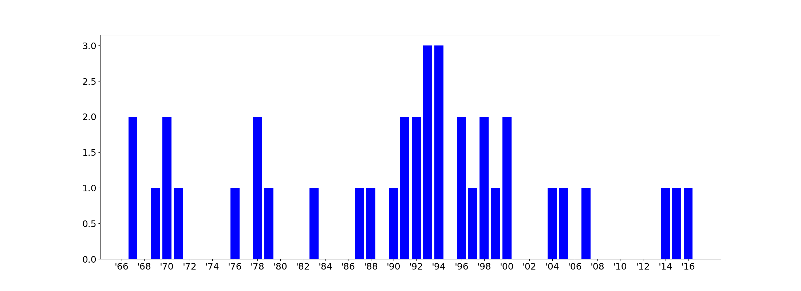
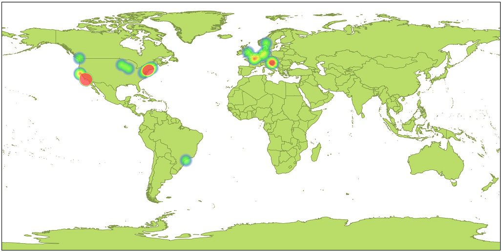

38 Greatest Albums of All Time
Albums are rated by how well they sound when listened to from beginning to the end without interruptions. That's the reason why there is no Nevermind by Nirvana or Rain Dogs by Tom Waits on the list, since they contain a few songs that ruin the flow of the record. There are also no live albums or compilations.
Click on the cover to listen to the record on Youtube!!!
#1 | "Rage Against the Machine" — Rage Against the Machine
No samples, keyboards or synthesizers were used in the making of this record

#2 | "L.A. Woman" — The Doors
Recorded live at their rehearsal space in six days with Elvis's bass player

#3 | "Blue Valentine" — Tom Waits
Waits at the start of his transformation

#4 | "Sound of Silver" — LCD Soundsystem
Dance-rock for failed hipsters

#5 | "Morrison Hotel" — The Doors
Rothchild's best record

#6 | "The Velvet Underground & Nico" — The Velvet Underground
Banana was peelable on early copies

#7 | "Odelay" — Beck
Vinyl crackling noises were added intentionally

#8 | "Ramones" — Ramones
Divine intervention

#9 | "To Pimp a Butterfly" — Kendrick Lamar
Masterpiece

#10 | "Razdor" — Majke
Dark and hopeful at the same time

#11 | "The Low End Theory" — A Tribe Called Quest
They sound fresh even when rapping about pagers

#12 | "!!Destroy-Oh-Boy!!" — New Bomb Turks
High octane punk 'n' roll

#13 | "Unknown Pleasures" — Joy Division
Always better than you remember

#14 | "In Utero" — Nirvana
Drum room mics were delayed for 20 milliseconds

#15 | "Death and the Bible" — The Tiger Lillies
Weimar, Brecht, Weill, the whole shtick

#16 | "Check Your Head" — Beastie Boys
Better than the sum of its parts

#17 | "Funhouse" — Stooges
Stooges at their raw, sweaty, howling peak

#18 | "Swordfishtrombones" — Tom Waits
Start of the Big Time era

#19 | "Safe as Milk" — Captain Beefheart
Beefheart for the masses

#20 | "Brown Album" — Primus
Kalamazoo is a real place in Michigan

#21 | "Tourist" — St Germain
A synthesis of electronics with jazz soloing

#22 | "Midnite Vultures" — Beck
Hitting the L.A.'s main nerve

#23 | "I Whistle - You Dance" — Dicky B. Hardy
Having no bass player can make your music more exciting

#24 | "Smash" — The Offspring
Best-selling independent album of all time

#25 | "Run the Jewels 2" — Run the Jewels
Hardcore hip hop that is not based on trap

#26 | "Cansei de Ser Sexy" — CSS
Fun and relatable

#27 | "The Velvet Underground" — The Velvet Underground
Ultimate night record

#28 | "Spiderland" — Slint
More a song than an album

#29 | "Franks Wild Years" — Tom Waits
High on life

#30 | "Are We Not Men? We Are Devo!" — Devo
Too much of Brian Eno's ideas were rejected

#31 | "Surfer Rosa" — Pixies
Drum room mics were delayed for 20 milliseconds

#32 | "One" — NoMeansNo
Their least annoying record

#33 | "Stereopathetic Soulmanure" — Beck
Proper lo-fi/trash Americana

#34 | "Clandestino" — Manu Chao
Electronic beats got lost during production

#35 | "Illmatic" — Nas
This

#36 | "Amphibios" — Matter
A fish called Wanda

#37 | "Nemesis Divina" — Satyricon
Great fusion of garage and studio production

#38 | "Repeater" — Fugazi
Ultimate day record

#Release Date — Year

#Studio Location
